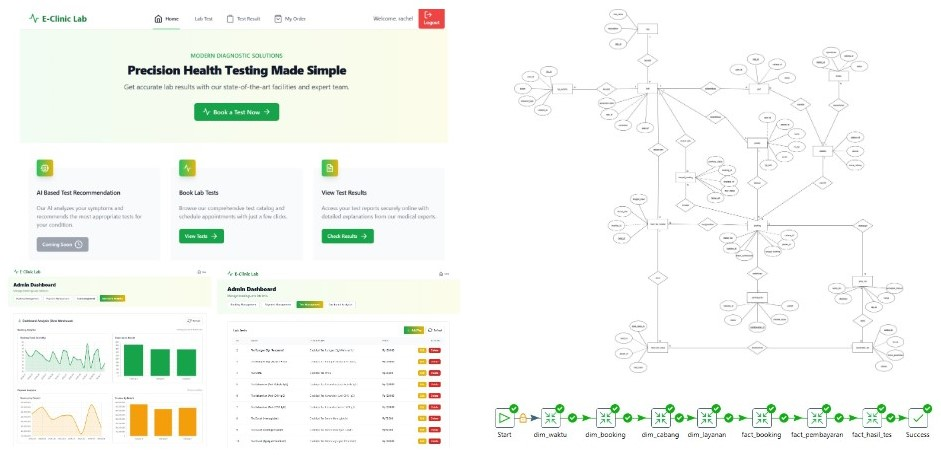
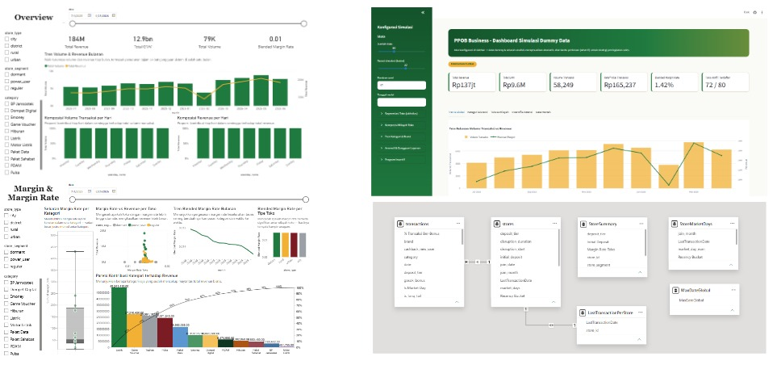
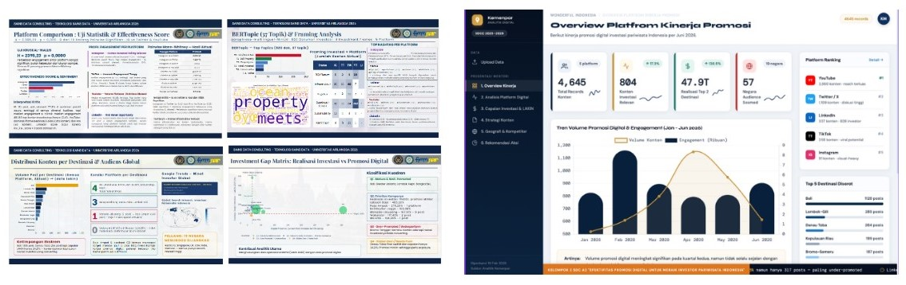
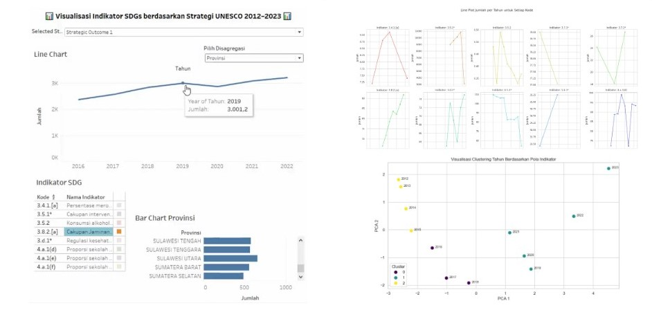
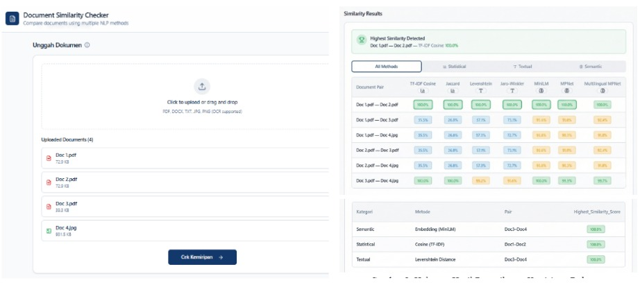
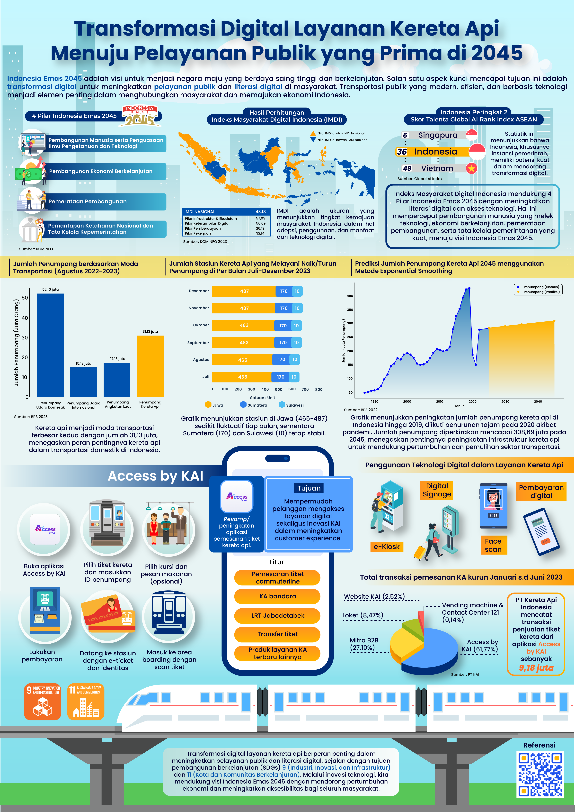
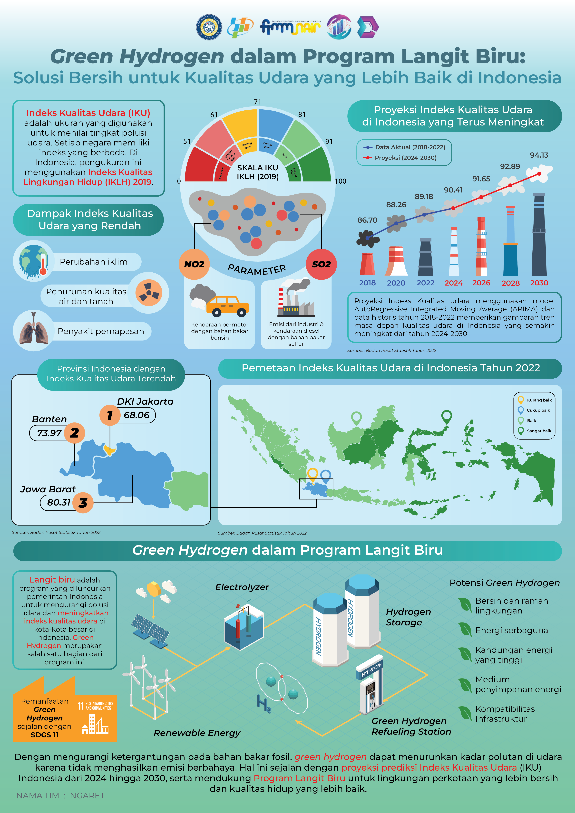
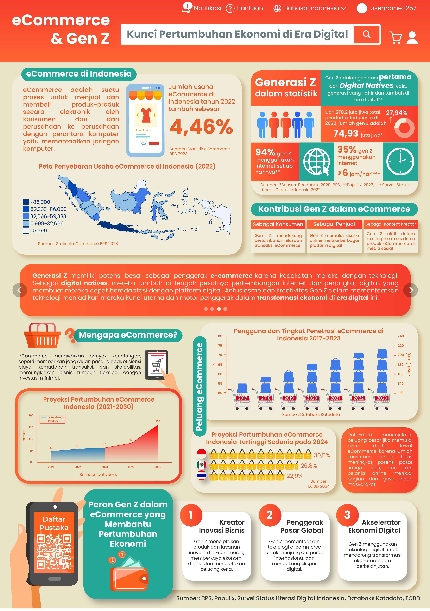
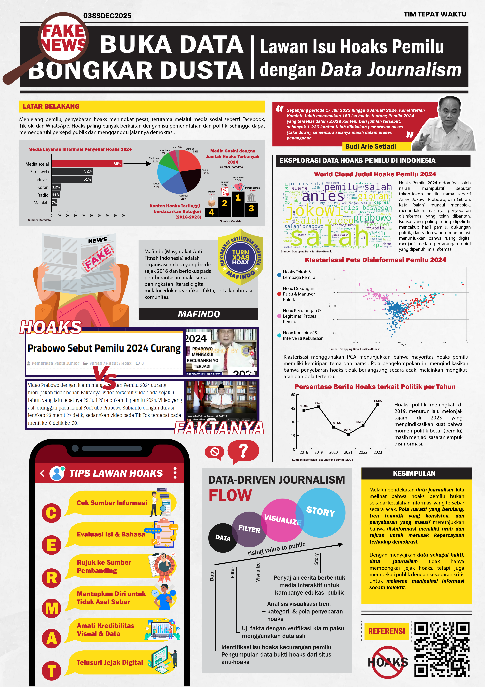
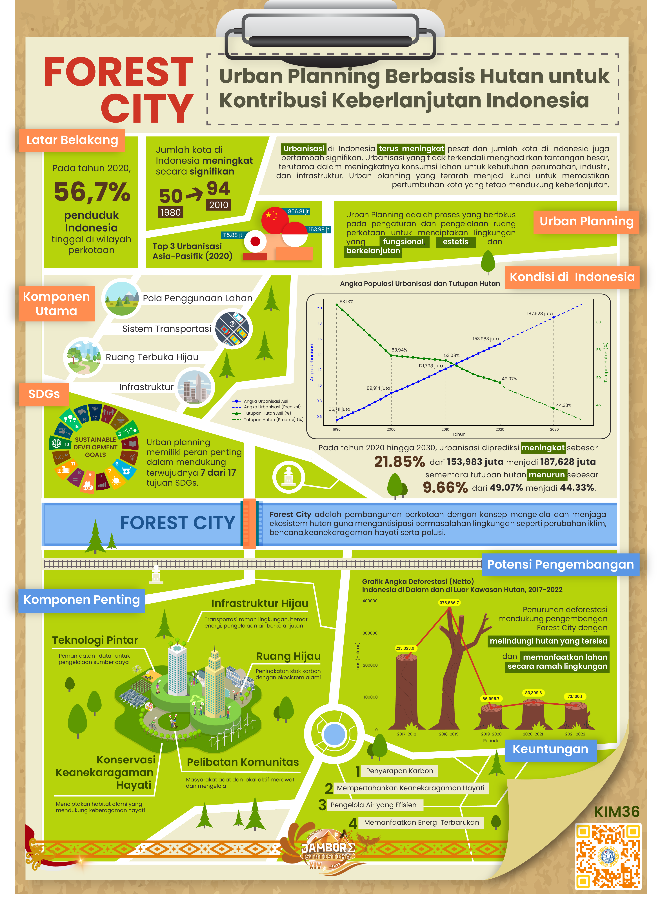

Selected Projects
Orchestra Member ETL Pipeline & Analytics Dashboard
Data Engineering Portfolio Project
Containerised end-to-end ETL pipeline processing orchestra membership data across faculties and instrument sections. Star Schema data warehouse with staging and warehouse layers. Airflow DAG with 6 sequential tasks, XCom metadata passing, retry policies, and pipeline run logging. 20+ pytest unit tests. Metabase dashboard for member composition insights.
E-Clinic Lab Healthcare Laboratory Information System
Advanced Database Final Project
Relational OLTP database and OLAP data warehouse supporting multi-branch lab operations and analytical reporting. Designed normalised MySQL schemas, architected the OLTP-OLAP separation, and built Pentaho ETL pipelines with data quality checks. Delivered dashboards monitoring branch-level KPIs and operational trends.

PPOB Business Dashboard Sales Analytics & Scenario Simulator
Data Scientist Intern at PT Digital Mediatama Maxima Tbk.
End-to-end sales performance analysis for a PPOB business. Generated a realistic synthetic transaction dataset (Python/Pandas) simulating product categories, brands, and agent stores with seasonality. Built a relational Power BI data model with custom DAX measures and an interactive Streamlit scenario simulator for configurable business assumptions.

Ministry of Tourism Digital Promotion Effectiveness Analysis
Data Science Consulting Course
Consulting-style analysis for a real case from Kementerian Pariwisata: which digital channels most effectively reach investors, what content characteristics drive engagement, and how to increase digital exposure. Used Mann-Whitney U tests, Investment Gap Matrix, and LAKIN 2025 benchmarking. Delivered dashboard and strategy deck to Kemenpar representatives.

UNESCO SDG Education & Health Clustering Analysis
IMILKOM USU IT Competition 2025 (3rd Place)
Clustering-based analysis of how 34 Indonesian provinces implemented UNESCO's Education for Health and Well-being strategy (2012-2023). Consolidated multi-source indicators (BPS, SDG reports, Profil Pendidikan), applied PCA and K-Means clustering, and built a Tableau dashboard visualising region-based implementation patterns.

Document Checker Multi-Model NLP Similarity Web App
NLP Final Project
Web-based document comparison system for 2 to 10 documents simultaneously across PDF, DOCX, TXT, and image (OCR) formats. Integrated NLP pipeline with text extraction, preprocessing, and pairwise similarity using statistical, textual, and Transformer-based embedding methods.

Infographic – Transformasi Digital Layanan Kereta Api Menuju Pelayanan Publik yang Prima di 2045
4C National Competition 2024 (Top 10 Finalist)
Created an infographic on Indonesia’s railway digital transformation using data analysis and visual storytelling. Analyzed trends in passenger volume, station activity, and digital readiness, and applied exponential smoothing for future projections. Translated complex data into clear visuals aligned with the Indonesia Emas 2045 vision, enhancing public understanding through engaging, data-driven narratives.


Infographic – Green Hydrogen dalam Program Langit Biru: Solusi Bersih untuk Kualitas Udara yang Lebih Baik di Indonesia
Airnology 3.0 National Competition 2024 (Best Infographic)
Designed an infographic on air quality in Indonesia, applying time-series forecasting (ARIMA) to project future Air Quality Index (IKU) trends from 2024 to 2030. Mapped regional air quality data and analyzed pollution sources (NOx, SOx) to support the case for green hydrogen solutions. Effectively communicated complex environmental data into a clear, visually engaging narrative aligned with sustainable development goals (SDGs).

Infographic – eCommerce & Gen Z: Kunci Pertumbuhan Ekonomi di Era Digital
Data Storytelling & Visual Design Project
Created a data-driven infographic showcasing Gen Z’s pivotal role in Indonesia’s eCommerce growth using multi-source statistics (BPS, Populix, Katadata). Visualized temporal growth trends (2017–2023), regional eCommerce distribution, and projections to 2030. Combined demographic insights with digital behavior to narrate a compelling story of economic transformation through Gen Z participation.

Infographic – Buka Data, Bongkar Dusta: Lawan Isu Hoaks Pemilu dengan Data Journalism
Data Journalism & Election Analytics
Created a compelling data journalism piece dissecting political hoaxes during the 2024 Indonesian election using clustering, word cloud analysis, and time series charts. Applied advanced data filtering and visualization techniques to expose misinformation patterns, highlight media platforms with high hoax incidence, and communicate verified facts in an accessible narrative format.

Infographic – Forest City: Revolusi Hijau di Tengah Urbanisasi
Sustainable Urban Planning Infographic
Created a compelling infographic to communicate the urgent need for sustainable urban planning through the "Forest City" concept. Analyzed multi-source datasets on urban population growth, forest cover decline, and deforestation trends to emphasize the ecological impact of rapid urbanization. Translated complex environmental metrics, into intuitive visuals, connecting them with actionable urban solutions. Effectively integrated narrative elements and infographics to demonstrate how green infrastructure, community engagement, and biodiversity conservation can support climate goals and Sustainable Development Goals (SDGs).

Other Infographic & Visual Storytelling Projects
National Competitions & Design Portfolio
Additional data-driven infographics and visual storytelling projects submitted to national competitions, including Smart Living di IKN: Inovasi dalam Kesehatan, Kesejahteraan, dan Keselamatan Publik melalui Data dan Statistik; Green Commerce: How Data Science Drives Environmental Sustainability in E-Commerce; Smart Farming; and Youth Transforming Manufacturing: Unlocking The Power of AI and Digital Integration in ASEAN.